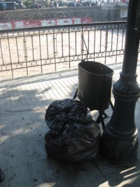

Basura
 De: La Frikipedia, la enciclopedia extremadamente seria.
De: La Frikipedia, la enciclopedia extremadamente seria.
Palabra mundialmente difundida con la que se suele designar a ti a las cosas de las que te deshaces o tienes ganas de deshacerte, o sencillamente que es algo malo o que no te gusta.
¿Dónde la puedo encontrar?
 Ya se imaginarán a dónde van a parar esas bolsitas negras
La bruja Lola impartiendo su clase magistral
En todos lados, desde la Casa Blanca hasta el rincón más humilde del radioactividad, hasta llegar las formas más inverosímiles que se puedan imaginar, aunque lo correcto sería que estuviesen en tarros de basura etiquetados con el tipo de material, la cantidad de almacenaje, el medioambiente.
Pero para qué hacerse tantos problemas si lo que hay que hacer es deshacerse de la basura, así que la terminan botando toda mezclada y de una sola, total, es basura, ¿cómo va a tener más derechos que nosotros?, poco menos que tiene que recibir un trato de 5 estrellas, dejen de andarse con... (censurado), (censurado), (censurado).
Por otro lado, hay lugares en que la basura está más aglomerada. Dichos lugares se conocen como vertederos, aunque a las personas les da lo mismo tirar la basura en cualquier lado, por lo que además de los vertederos existen lugares que por sí solos ya son vertederos, los que más se usan son generalmente:
- Los ríos (Véase río Mapocho).
- Las casas deshabitadas
(aunque las ratas viven por todos lados)
- Los típicos sitios vacíos con letreros "Se Vende"
- Los tarros de basura (el 0.000000001% de los casos)
- Los alrededores de los tarros de basura (y después quieren llegar a la NBA)
- Zonas donde dice "No Botar Basura"
- Las ciudades
- El WC
- En medio de la carretera
- Al cagar
- Al almorzaste en el McMierda)
- Cuando mueres (y hay muchos muertos alrededor, de lo contrario no se nota)
- Al derramar petróleo
- Al derramar alcohol (por lo que ya sabes que tienes que hacer:
que todo caiga por tu esófago no tomar alcohol nunca)
Peligros de la basura
La basura de diferentes tipos ha sido sometida a diferentes tipos de tests realizados, monitoreados e interpretados por la peligros a la desarrollo normal de los seres ahumados, que se traduce a unos puntos más específicos:
- Está totalmente garantizado que si hay basura en el camino
cabeza además de morir, si vas a más de 80 kilómetros por hora, a menos velocidad puede que sobrevivas y que no te cagues de cabeza pero vas a quedar tan mal como el gilipollas de la colleja.
- Si lo que quieres es irte al espacio exterior, piénsalo dos veces, por el hecho de que ¡hay basura en el espacio!, que al chocar con tu nave, tu nave va a destruirse en mil pedazos incluso si choca contra un vaso de plástico, por lo que firmarías tu propia sentencia de muerte.
- No comas basura,
a menos que quieras suicidarte, morir, etcétera la basura contiene millones de gérmenes y toxinas y fue mezclada con mucha más basura, por lo que lo más probable es seguro que si la comes te convertirás en una escoria de tribu urbana te morirás.
- Lanzar basura contra tu oponente no siempre es ventajoso. Si sobrevive es posible, aunque poco, que se vuelva radioactivo y que desarrolle gustos por el paqqaeton, además de apestar y pensar como la de el diario de Eva, por lo que si le tiras basura asegúrate de que sea un cóctel letal.
- Si te gusta el paqqaeton considera que estás infectado/a, aunque hayan otras personas que les guste (de paso ellos también están infectados).
Tipos de basura
- La basura doméstica: Es la basura a la que se le puede enseñar trucos como por ejemplo apestar cada ciertas horas del día o hacer que se quede protegiendo tu casa mientras sales de parranda. Basura muy amistosa que te acompaña hasta el final de tu vida, pero que lamentablemente es muy escasa y termina siendo molesta como cualquier otra.
- La basura industrial: La escoria que producen las multinacionales es de muy mal carácter y es imposible de domesticar, y al ser tirada en grandes cantidades la mala multinacionales se niegan a siquiera
contarles un cuento antes de lanzarlas quitarles las sustancias más tóxicas para hacerlas menos letales. Para encontrar más detalles sobre esa pelea véase Protocolo de Kioto.
- La basura "tabla de multiplicar": Esta basura por sí sola no es problema, pero cuando se reproduce (y suele hacerlo rápidamente) es capaz de volverse en un verdadero dolor de cabeza. La detección a tiempo de este tipo de basura es vital para deshacerte de ella, de lo contrario se saldrá de control hasta convertir tu casa en un nuevo vertedero y terminará siendo derribada por la presión.
- La basura radioactiva: Esta basura es antisocial y tiene el temperamento propio de un tal Iván, por lo que suele hacer atentados contra todo el mundo, incluyendo a sí misma y mientras más basura de ésta haya más hostias se repartirá entre ella y sus alrededores.
- La montaña de basura: Es una pena que no sea de monedas de 1 peso, pero los niños también se divierten jugando en ella
hasta que se dan cuenta que por eso se enfermaron de diarrea. Cada vez hay más de éstas por lo que Disney decidió crear su próximo parque de diversiones usando sus propias montañas de basura para que los niños se sigan enfermando de diarrea se diviertan más.

He aquí un vertedero tamaño standard
- El vertedero: Aquí las cosas empiezan a ponerse feas
como si no lo estuvieran antes. Aquí hay tanta basura que cualquier persona en su sano juicio viviría como mínimo a 10 campos de fútbol de distancia del límite más cercano al famoso vertedero ese, con todo tipo de basuras asesinas dispuestas a rellenarnos con sus desperdicios y hacernos oler caca todo el día y toda la noche. La Frikipedia tiene su propio vertedero con los truños que suele mandar IP anónima cada día.
- El desastre
natural: Los daños en esta etapa son irreversibles, el colapso es general, es imposible vivir una vida normal en ese lugar, y no creas que irse al espacio como si nada va a solucionar el problema, porque la basura te perseguirá hasta que llegue el final de tus días ¡mwuahahahaha! tienes que evitar que las demás zonas también se infecten y si el Monstruo Espagueti Volador así lo desea, lanzará un rayo que te va a freir el desastre que tú y tus amigos hicieron.
- El machismo, el esporas).
Proyecciones del daño que puede causar la basura
En el caso de seguir botando tanta basura y no hacer nada para reducirla tanto en número como en toxicidad, es posible que la basura termine dominando al mundo en cosa de un par de años. Todos los ríos quedarán como el Mapocho, los paisajes pasarán a ser vertederos y todo lugar que hasta ahora era habitable ya no lo será más.
Por ahora todo pareciera indicar que la basura crece a medida que la población del hombre (y de la mujer también) también crezca, por lo tanto, que fuese directamente proporcional a la cantidad de basura que aparece por día (por segundo es una proporción inversa), por lo que la solución sería extinguir a la raza ahumada lo cual salvaría al mundo y a los demás seres vivos que queden que el mundo no se va a acabar todavía.
Aunque se estudien otras formas para combatir la basura, acabar con los seres ahumados me da más confianza pareciera ser la más efectiva.
Formas de combatir la basura (versión beta)
Todavía no se termina de encontrar una solución definitiva por no mirar la solución de arriba debido a que cada día se produce más basura, por lo que las investigaciones van contra el reloj y la Comunidad Científica cobra demasiado dinero porque el dólar ya no vale ni para limpiarse a herculio.
Hasta ahora lo único que está a nuestro alcance es quemar tiempo frenar un poco el avance de este mal con estos métodos insignificantes:
- Quemarla en una hoguera: Ahora sólo se le tiene reservada como condena a los herejes y para cremar cadáveres evitando que se conviertan en zombies.
- Usarla de otro modo: Como en Guerra de Chatarra para usarla como un arma de fabricación económica o en los trabajos de manualidades para que la profesora te ponga nota máxima por "creatividad"
aunque tu trabajo sea una bosta. Por lo menos te ahorras lo que te costaba comprar el material original.
- Reciclarla: Negocio poco rentable porque
a nadie le interesa también terminan produciendo su propia basura y así en un ciclo que nunca termina pero que te terminan cobrando igual.
- Exhibirla en un museo: Puede ser efectivo al corto plazo porque no genera más basura, el problema es que tampoco hace algo para reducirla y vas a tener tanta basura guardada que no va a quedar espacio para guardar más. Por otro lado, ¿a quién le interesaría ir a ver basura a un museo?
- Hacer tratamientos de depuración: Lo bueno es que hace que la basura sea menos tóxica y hasta puede reducirla en número, pero el problema de esto es que les dio por cargar el costo del mantenimiento a la cuenta
como si no chuparan ya suficiente dinero.
- No tirar basura:
sencillito Ésta sería la solución lógica, el único defecto es que en algún punto tendrás que tirarla porque si no mejor empecemos con la solución del apartado anterior.
Autor(es):
- Fordus
- Khazike Khashondo
- El Sevillano
- ToxicCastle
- Relegados United
- Bladguer
- Skins italia
- Gñapero Solitario
- Genericool
- Catvill
Frikipedia 2005-2016, Licencia
GFDL 1.2 - Extraído por FrikiLeaks